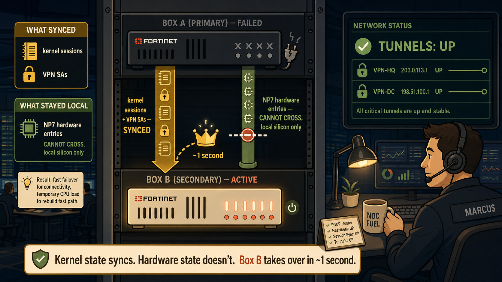
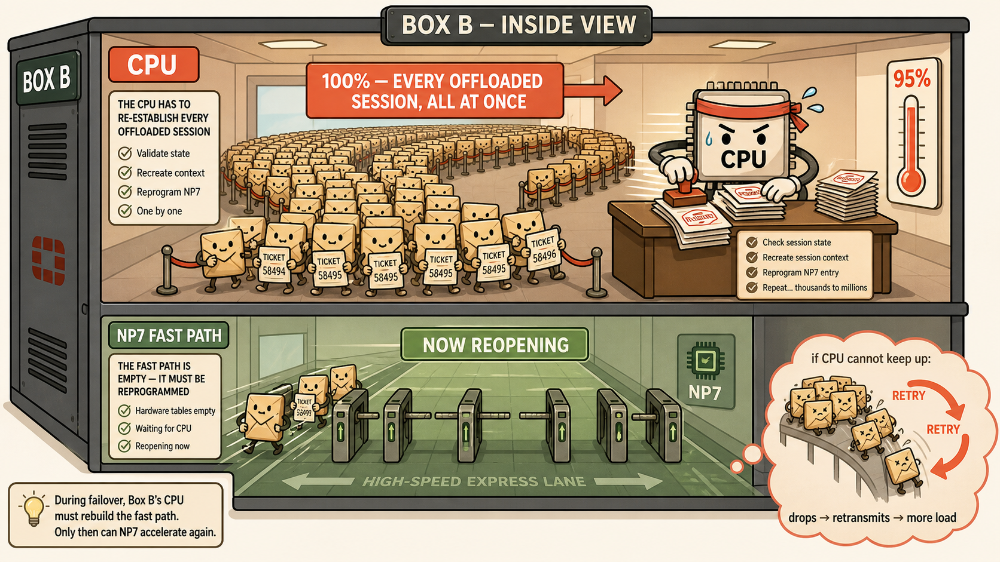
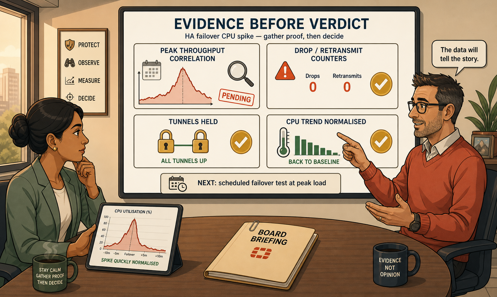

A cinematic troubleshooting scene: why an FGCP failover that worked perfectly still lit the CPU on fire.
Session sync moves what the kernel knows. It cannot move what the silicon knows.
This page turns Thursday's incident at Vaultline into a three-scene visual story, so that six months from now, 'FGCP failover CPU spike' instantly reconstructs the whole mechanism in your head.
ABOUT THIS VISUAL
Why a Troubleshooting Scene
The concept: FGCP session synchronization mirrors kernel-level state (sessions, VPN SAs) continuously between cluster members — but the NP7's hardware offload table is local silicon state that can never cross the sync link. At failover, every inherited session must be CPU-processed once to re-establish the fast path, producing a temporary but potentially massive CPU surge.
Why it exists as a problem: "session sync" quietly gets flattened in memory into "everything transfers." Under exam pressure — and worse, in a real incident review — that flattening leads to misreading an expected CPU spike as a fault, or to sizing an HA pair for steady-state load and discovering the missing margin at the worst possible moment.
Chosen approach: a three-scene cinematic troubleshooting story, following Thursday's real incident at Vaultline Financial. Concepts encoded inside a narrative with characters and consequences are recalled far more reliably than labeled diagrams — you don't remember "the kernel/NP7 boundary," you remember the chips piled against the wall while the ledgers flowed past them.
The mental model in one line: the failover moves the address book, not the muscle memory — Box B knows every session by name, but has to dial each number by hand once before speed-dial works again.
💭THINK FIRST · SCENE 1 — THE HANDOFF
Before revealing the scene, reconstruct it yourself: Box A just died. What does Box B already have, and what is it missing?
At the instant Box B becomes primary, list what it inherited via FGCP sync — and the one thing that structurally could not come with it.
The clearing-partner VPN tunnels never dropped. What does that prove about the sync, as evidence?
Q1 — MODEL ANSWER
Inherited: the full kernel session table (TCP sessions, VPN SAs, NAT state) and the identical configuration it already carried. Missing: the NP7 hardware offload entries — those live in Box A's silicon and there is no mechanism to write them remotely into Box B's chip.
Q2 — MODEL ANSWER
It proves session-state synchronization worked exactly as designed — VPN SAs are part of the synced state. If the tunnels had renegotiated, that would indicate a sync failure rather than a sizing question.
SECTION 01
Scene 1 — The One-Second Handoff

02:47 AM equivalent, three weeks later: the crown moves in one second — but the speed-dial stays behind.
images/s1-scene-one.png
Flat minimalistic but highly detailed cartoon illustration, modern vector-art aesthetic, warm modern colour palette with cream background, coral accents, muted gold highlights, sage greens, and soft brown outlines, clean bold line work, no gradients, no photorealism, no 3D rendering, highly structured composition with generous spacing. CINEMATIC WIDE SHOT of a dim network operations room rendered in warm cream and deep navy tones with soft pools of golden desk-lamp light. Centre-stage: a server rack drawn flat and stylised containing two FortiGate firewall boxes stacked vertically. TOP BOX (Box A): drawn dark and lifeless, small grey X marks over its status LEDs, a tiny broken power-plug icon beside it with a thin wisp line, its outline slightly faded to show it has died. BOTTOM BOX (Box B): glowing warmly awake, coral status LEDs lit, a small golden crown icon shown mid-hop between the two boxes along a dashed motion arc labeled '~1 second'. Between the boxes, TWO visual channels drawn clearly: (1) a thick gold ribbon flowing downward from Box A to Box B carrying tiny flat ledger-book icons and tiny padlock icons (labeled 'kernel sessions + VPN SAs — SYNCED'), the ribbon glowing to show successful transfer; (2) beside it, a second channel drawn as a sage-green pipe that stops abruptly at a dashed barrier wall halfway down, with tiny circuit-chip icons piled up on Box A's side unable to pass, labeled 'NP7 hardware entries — CANNOT CROSS, local silicon only'. In the foreground corner, a stylised flat engineer character (Marcus, wearing a headset, calm expression, holding a coffee cup) watches a wall monitor showing a green 'TUNNELS: UP' status badge with two small unbroken padlock icons. Perspective: slightly elevated three-quarter view looking down at the rack. Every object reinforces the concept: what synced (ledgers, padlocks) visibly crossed; what could not sync (chips) visibly stayed behind.
Thursday, 14:20. Box A's power supply dies — same failure type as the original Sunday incident that started this whole HA journey. But this time there's no cold spare, no config restore, no four-hour scramble. Box B has been standing in the rack the entire time, heartbeat pulsing, session table mirrored continuously. The virtual identity moves in roughly one second. The clearing-partner VPN tunnels — the ones that cost Vaultline an SLA penalty three weeks ago — don't even flicker.
But look closely at the scene: two channels run between the boxes, and only one of them flows. The kernel's knowledge — sessions, VPN SAs, NAT state — crosses freely. The NP7's knowledge is trapped in Box A's silicon, piled up against a wall it structurally cannot pass. Box B is about to discover what that means.
🧠
MENTAL NOTE
The handoff is two channels, not one. Kernel state flows; silicon state hits a wall. Everything that happens next follows from that single asymmetry.
ASK A QUESTION
ADD A NOTE
💭THINK FIRST · SCENE 2 — THE SURGE
Box B is now primary, holding thousands of sessions its NP7 has never seen. Predict the next 45 seconds before revealing.
What fraction of previously-offloaded traffic becomes CPU-bound at this exact moment, in the worst case?
If the CPU can't keep pace, what feedback loop ignites — and why does it feed itself?
Q1 — MODEL ANSWER
100%. Every session that was offloaded on Box A arrives at Box B's CPU simultaneously, because Box B's NP7 holds zero hardware entries for any of them until each session's first packet is CPU-processed and the fast path re-established.
Q2 — MODEL ANSWER
Drops → TCP retransmits → more load on the already-overloaded CPU → more drops. The retransmissions intended to recover from loss become the fuel that sustains the overload — a congestion feedback loop, not a graceful slowdown.
SECTION 02
Scene 2 — One Hundred Percent, All At Once

45 seconds at 95%: every session queues at the one desk that's open.
images/s2-scene-two.png
Flat minimalistic but highly detailed cartoon illustration, modern vector-art aesthetic, warm modern colour palette with cream background, coral accents, muted gold highlights, sage greens, and soft brown outlines, clean bold line work, no gradients, no photorealism, no 3D rendering, highly structured composition with generous spacing. CINEMATIC INTERIOR SHOT rendered as a cutaway view INSIDE Box B, drawn like a stylised flat cross-section of a building with two floors. UPPER FLOOR labeled 'CPU' : a single desk with a stylised flat CPU character (a square-headed figure with a coral headband, sweat-drop marks, determined expression) stamping papers rapidly, motion lines around its stamping arm, a wall thermometer beside the desk with the mercury pinned high in a coral zone reading '95%'. Leading to this desk: an enormous winding queue of tiny flat packet characters (small envelope-shaped figures with simple dot eyes), hundreds implied through repetition fading into the background, each holding a tiny ticket. A large sign over the queue reads '100% — EVERY OFFLOADED SESSION, ALL AT ONCE'. LOWER FLOOR labeled 'NP7 FAST PATH': a wide, empty express corridor drawn in sage green with turnstile gates, almost entirely vacant, a single 'NOW REOPENING' sign, and a small trickle of stamped packet characters beginning to flow through the first turnstile with speed lines — showing the fast path re-populating one session at a time as the CPU stamps each ticket. In one corner, a small red warning vignette drawn as a faded 'what-if' thought bubble: packets falling off the end of an overflowing queue with tiny 'RETRY' boomerang arrows curving back into the line, labeled 'if CPU can't keep up: drops → retransmits → more load'. Perspective: straight-on cross-section, architectural dollhouse style. Every object reinforces the concept: the single stamping desk (CPU-mediated re-establishment), the queue of 100%, the empty-then-refilling express corridor (NP7 reprogramming), the boomerang retry loop (congestion feedback).
The instant Box B takes over, its kernel greets every inherited session by name — and then has to walk each one, personally, through CPU processing, because the NP7 express lane is empty. Not some sessions. Not the busy ones. In the worst case, one hundred percent of the previously-offloaded workload arrives at the CPU's single desk simultaneously. That's the 95% spike Marcus watched on the monitoring wall, and the 45 seconds of trading-floor users reporting the portal 'hanging.'
The faded red vignette in the corner of the scene is the failure mode that didn't happen on Thursday — but could at market open. An undersized CPU doesn't degrade gracefully under this surge; it drops packets, TCP retransmits, and the retransmissions feed the very overload that caused them. Thursday's box kept up. Whether it would keep up at peak throughput is a question the quiet afternoon cannot answer.
🧠
MENTAL NOTE
Size the pair for this scene — the worst second — not for the average day. A 95% spike on a quiet afternoon means the margin for a market-open failover may already be gone.
ASK A QUESTION
ADD A NOTE
💭THINK FIRST · SCENE 3 — THE VERDICT
The spike settles. Priya wants an answer for the board. Recall the evidence chain before revealing the final scene.
Name the four pieces of evidence that turn 'CPU spiked, then recovered' into an actual verdict.
What proactive step answers the question a quiet-afternoon failover cannot?
Q1 — MODEL ANSWER
(1) Failover timestamp correlated against FortiAnalyzer historical peak throughput, (2) drop/retransmit counters during the spike window, (3) VPN tunnel status through the event, (4) CPU trend after the spike. Recovery alone is necessary evidence, not sufficient evidence.
Q2 — MODEL ANSWER
A controlled, scheduled failover test during a monitored window that approximates peak trading-floor throughput — directly observing whether saturation and loss occur under worst-case load instead of inferring it.
SECTION 03
Scene 3 — Evidence Before Verdict

The board wants 'nothing to worry about.' The engineer wants four checkmarks first.
images/s3-scene-three.png
Flat minimalistic but highly detailed cartoon illustration, modern vector-art aesthetic, warm modern colour palette with cream background, coral accents, muted gold highlights, sage greens, and soft brown outlines, clean bold line work, no gradients, no photorealism, no 3D rendering, highly structured composition with generous spacing. CINEMATIC MEETING-ROOM SHOT, warm afternoon light through a flat-styled window. Two characters at a table: PRIYA (flat-styled professional woman, sage-green blazer, thoughtful expression, one eyebrow slightly raised) on the left holding a tablet showing a tiny CPU-spike graph shaped like a sharp mountain peak that quickly flattens; the CONSULTANT (flat-styled engineer, coral sweater, calm confident expression) on the right, gesturing at a large wall display between them. The wall display is drawn as a clean evidence board with four large checklist cards pinned in a two-by-two grid, each with a bold icon and short label: card 1 'PEAK THROUGHPUT CORRELATION' with a small line-chart icon overlaying a calendar; card 2 'DROP / RETRANSMIT COUNTERS' with a warning-triangle icon showing a zero; card 3 'TUNNELS HELD' with two unbroken gold padlock icons; card 4 'CPU TREND NORMALISED' with a downward-cooling thermometer icon. Three cards bear big gold checkmarks; card 1 bears a coral 'PENDING' stamp with a small magnifying glass, showing the one piece of evidence still being gathered. Below the board, a small callout plaque reads 'NEXT: scheduled failover test at peak load' with a tiny calendar-and-clock icon. On the table, a folder labeled 'BOARD BRIEFING' remains closed with a small paperclip, signalling the verdict is not delivered until the evidence is complete. Perspective: eye-level, slightly angled toward the evidence wall. Every object reinforces the concept: evidence cards before verdict, the closed briefing folder, the pending peak-correlation card, the proactive test plaque.
The final scene is the one that separates engineers from dashboard-watchers. Thursday's failover succeeded — the tunnels held, the spike settled, the design did its job. But 'it recovered' is necessary evidence, not sufficient evidence. The briefing folder stays closed until all four cards on the evidence wall carry checkmarks: peak-throughput correlation, drop and retransmit counters, tunnel status, CPU trend. Three are checked. One is pending.
And the plaque under the board is the real deliverable to Priya: don't wait for the next real failure to reveal the answer. Schedule a controlled failover test at peak-equivalent load, watch the same counters, and turn the one unanswerable question — 'would it survive market open?' — into a measured fact.
Key takeaway
Why it matters
Kernel state syncs; NP7 state doesn't
The single asymmetry that explains the entire incident — and the exam's favorite hidden detail
Worst case: 100% CPU-bound at once
The sizing number for an FGCP pair is the partner's full offloaded workload, not steady-state
Drops feed retransmits feed drops
An undersized CPU doesn't slow down gracefully — it can spiral at the moment redundancy is gone
Recovery ≠ safety margin
A quiet-period spike near the ceiling means the peak-load answer is still unknown
Tunnels holding = sync proof
VPN SAs are part of synced state; intact tunnels are diagnostic evidence, not just a good outcome
Exam notes: (1) A temporary CPU spike immediately after FGCP failover is expected NP7 resync behavior — distractor answers will frame it as a cluster fault or sync failure. (2) FGCP synchronizes IPsec tunnel state; "VPNs must renegotiate after FGCP failover" is a trap built on confusing cold-spare recovery with clustered failover. (3) "Session sync" in Fortinet documentation means kernel session state — never hardware offload state.
🧠
MENTAL NOTE
Memory hooks: Scene 1 = two channels, one wall (kernel crosses, silicon doesn't). Scene 2 = one desk, 100% of the queue (CPU re-establishes every fast path). Scene 3 = four cards, closed folder (evidence before verdict). Exam note: a temporary post-failover CPU spike on an FGCP pair is EXPECTED NP7 resync behavior — the trap answer calls it a fault; the correct answer asks whether packets were dropped.